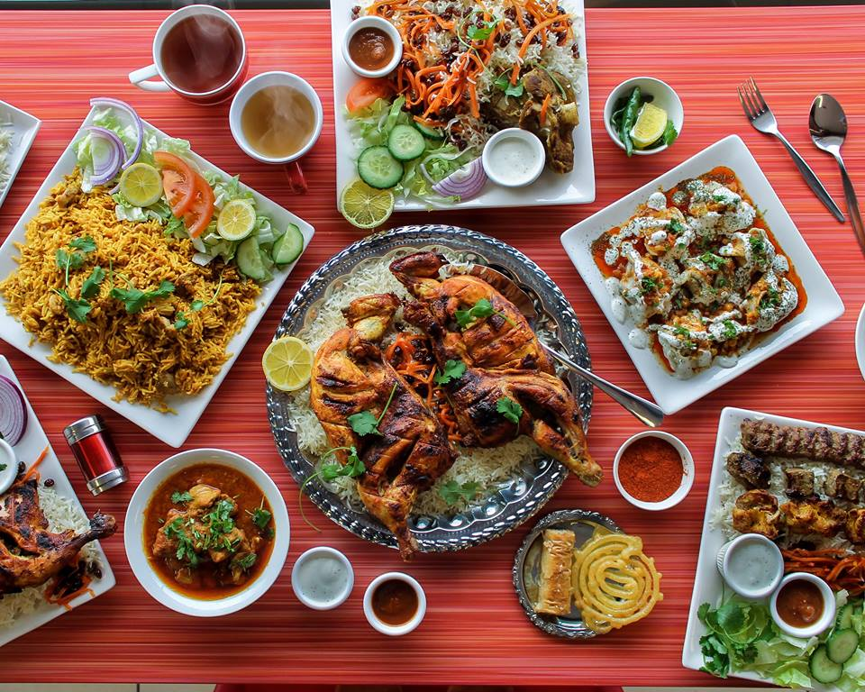
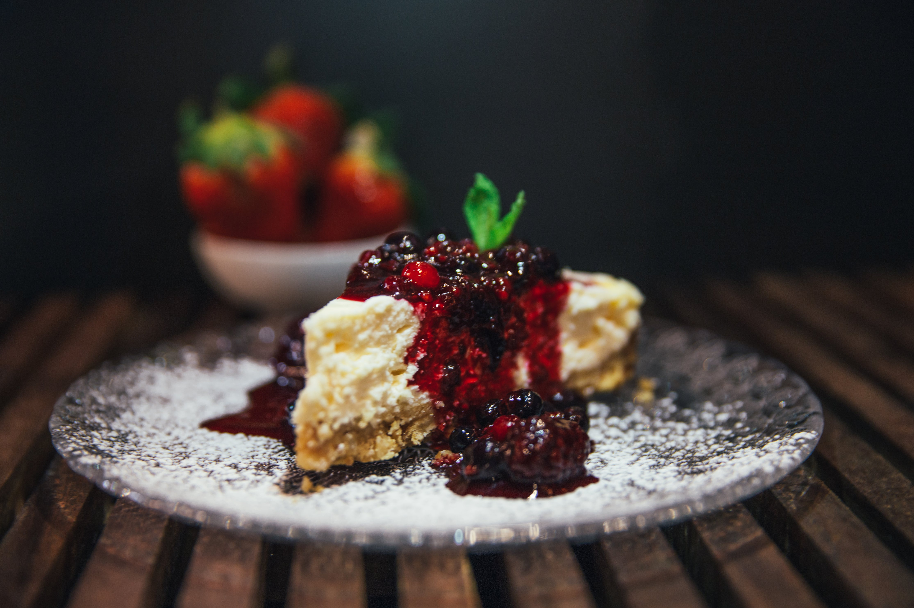

Wlcome to My Recipe Book
Welcome to My Recipe Book! Discover a world of delicious, homemade recipes and refreshing drinks for every occasion. Whether you're a beginner or a seasoned cook, our collection of easy-to-follow recipes will inspire you to create tasty dishes and beverages for your family and friends. Explore new flavors, find your favorites, and share your own creations too!
 